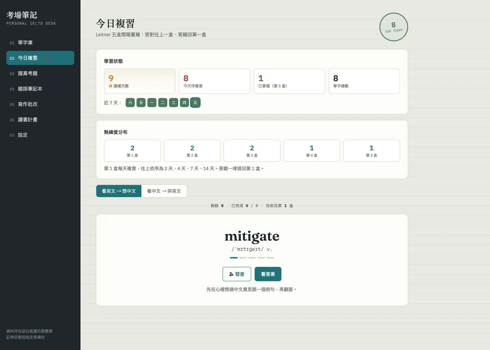

Cloudflare Pages · Gemini · Web Speech
考場筆記Personal IELTS Desk
繁中 IELTS 自學系統。單字庫、Leitner 五盒複習、AI 模擬題、錯題本、寫作評分、每日規劃，全部跑在瀏覽器。
A Traditional Chinese IELTS study desk. Vocabulary, Leitner review, AI mock questions, mistake notebook, writing feedback and daily planning, all in the browser.

讀設計筆記Read case notes
- 問題Problem
- 市面 IELTS 工具要付費、要帳號、資料不在自己手上。
- Existing IELTS tools cost money, require an account, and keep your data.
- 解法Approach
- 全部跑在瀏覽器。API key 存 localStorage，資料可匯出 JSON，雲端同步是選配。
- Everything runs in the browser. The API key lives in localStorage, data exports as JSON, and cloud sync is optional.
- 取捨Trade-off
- Gemini 直接從瀏覽器呼叫，沒有自己的後端。伺服器成本是零，代價是使用者得自己申請 key。複習演算法用 Leitner 不用 SM-2，因為使用者看得懂自己在第幾盒。
- Gemini is called from the browser with no backend. Server cost is zero; users bring their own key. Leitner replaces SM-2 because each box is easy to understand.
- 學到Learned
- 動態抓模型清單，比把模型名稱寫死耐用。另外寫了一份給 Claude Code 的交接包，之後再迭代就不必從頭交代專案。
- Dynamic model discovery outlasts hardcoded model names. A Claude Code handoff package means later iterations do not start from zero.